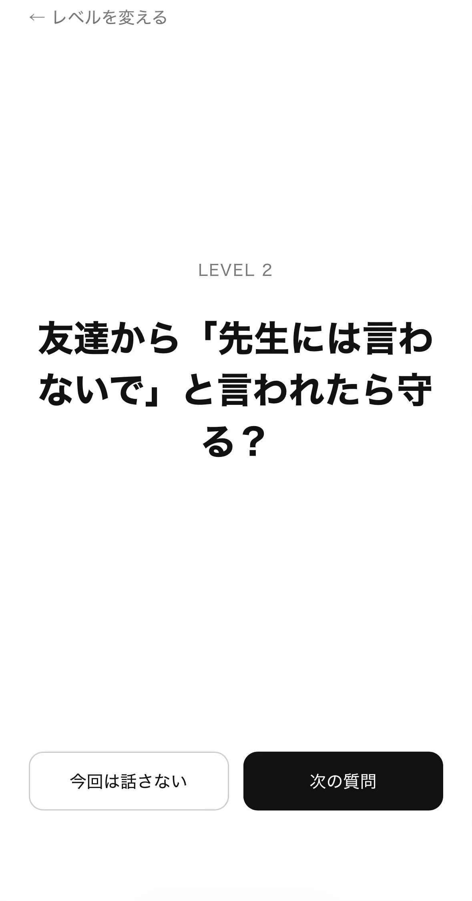
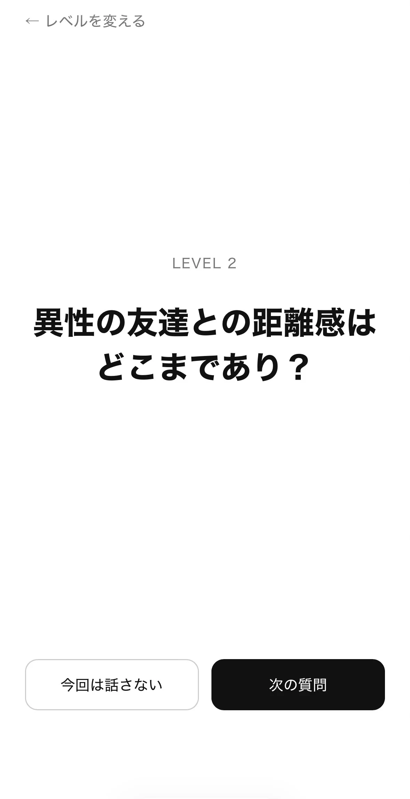
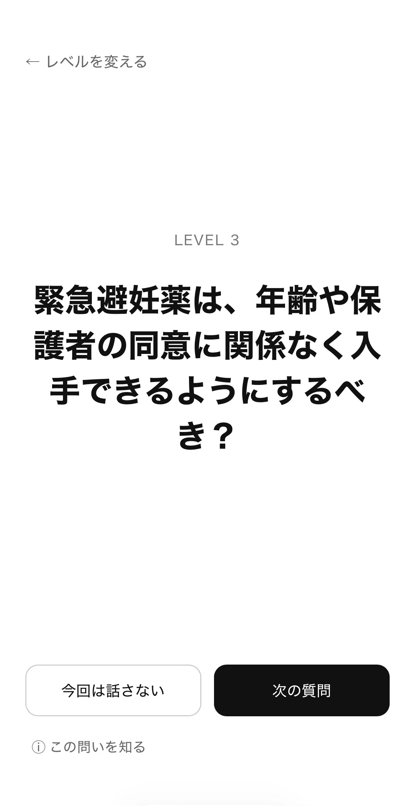
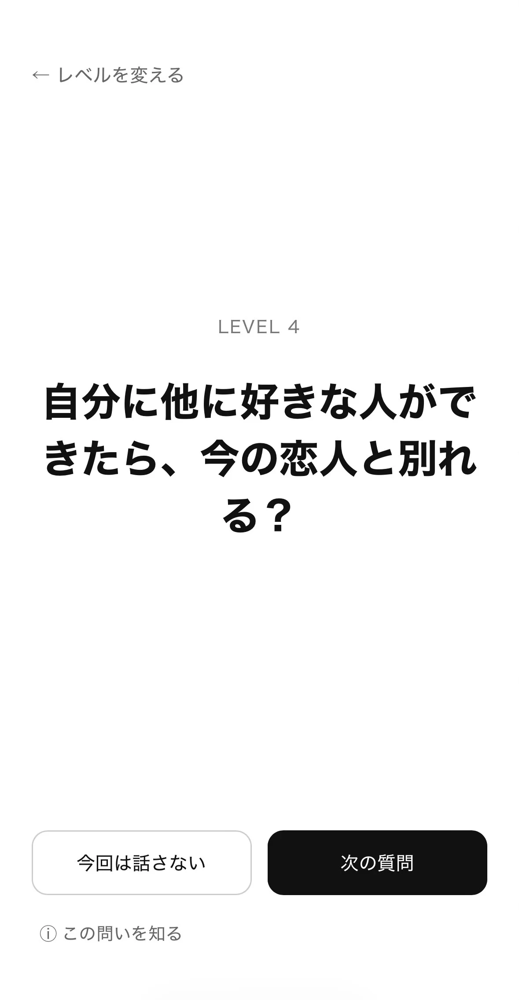
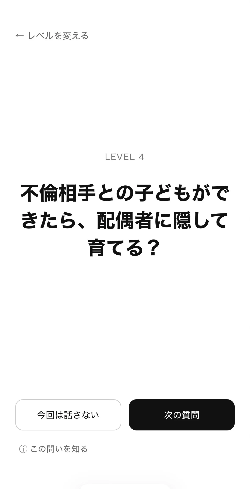

4つの深さ
| 身近な話 | 日常や身近な価値観について |
|---|---|
| 考える話 | 少し意見が分かれる話について |
| 重い話 | 社会や倫理について |
| 深い話 | 自分に置き換えて考える、非常に重く深い話 |
問題数
1回に話す問題数は、3問・5問・10問・15問から選択します。
写真は撮影時点の画面、JSONは現在のBetaブランチ（commit: 77e58e5）のデータです。写真は撮影時点の画面なので、最新の分類は質問カタログとJSONを正本として確認してください。
JSONファイル別の件数
| level1.json | 163件 |
|---|---|
| level2.json | 80件 |
| level3.json | 168件 |
| level4.json | 232件 |
| 合計 | 643件 |
質問画面の例





